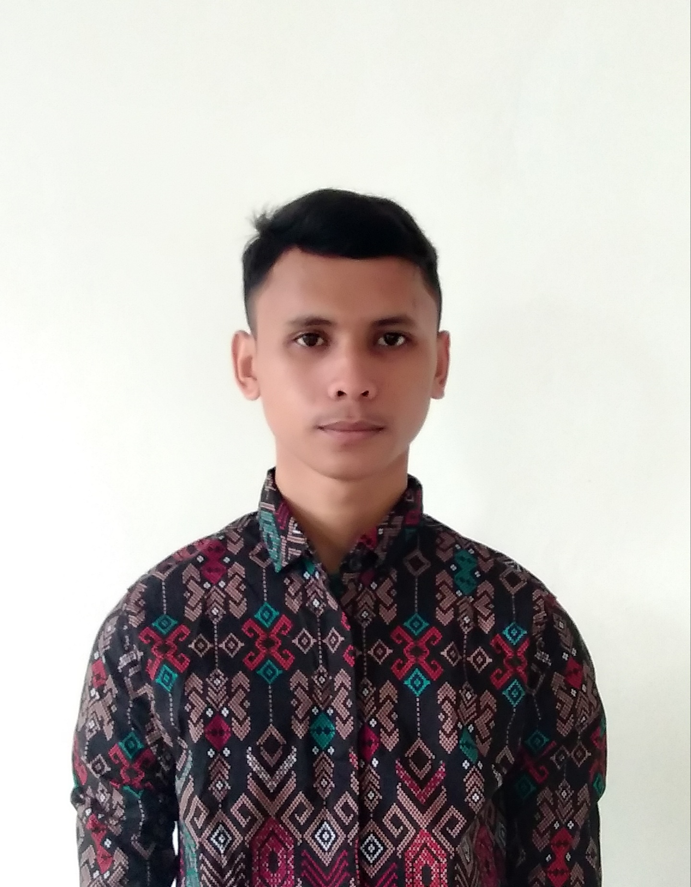

My Curriculum Vitae
 |
Biodata Pribadi
- Nama Lengkap : Irfan
- Tempat,Tanggal Lahir : Liaganda, 17 Agustus 2002
- Jenis Kelamin : Laki - Laki
- Agama : Islam
- Alamat : Dusun Liaganda, Kep. Selayar, SULSEL
- Tinggi Badan : 170
- Berat Badan :47
- Status : Mahasiswa
- Hanphone : 0219150049
- Email : irfa2113si@student.nurulfikri.ac.id
Biodata Pendidikan
- Sekolah Dasar : SD INPRES LIGANDA
- SMP : SMPN 3 PASILAMBENA
- SMK : SMK DARUL ARQAM MAKASSAR
- S1 : Sistem Informasi, STT-NURUL FIKRI
Pengalaman Pekerjaan
- Praktek Kerja Luar di UNHAS (Universitas Hasanuddin)
- Bimbingan BLK
- Kursus Bahasa English
Data Kemampuan
- Bahasa Percakapan : BHS. Indonesia(Aktif) ,English (Kurang Aktif) dan arab ( kurang )